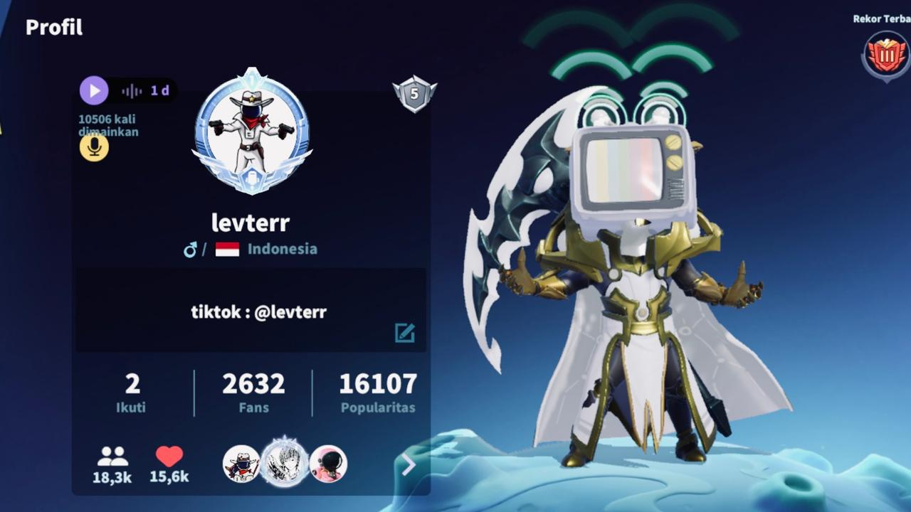
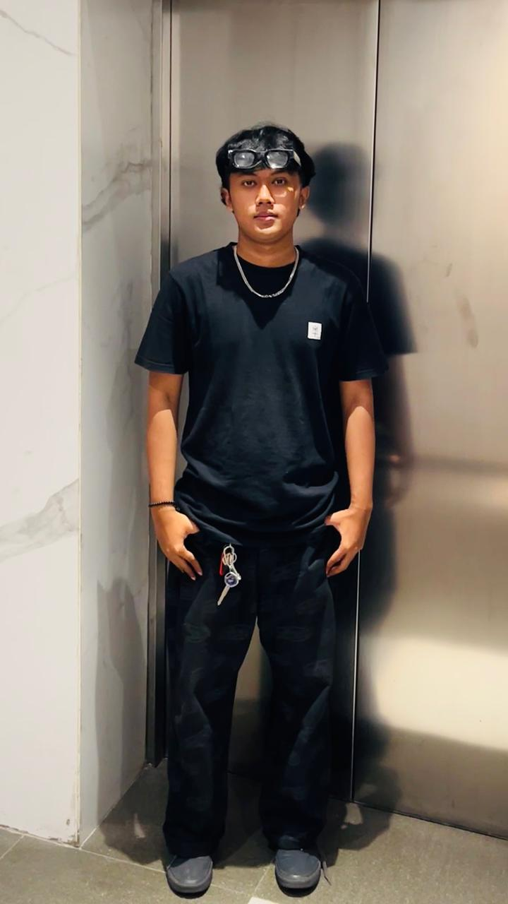
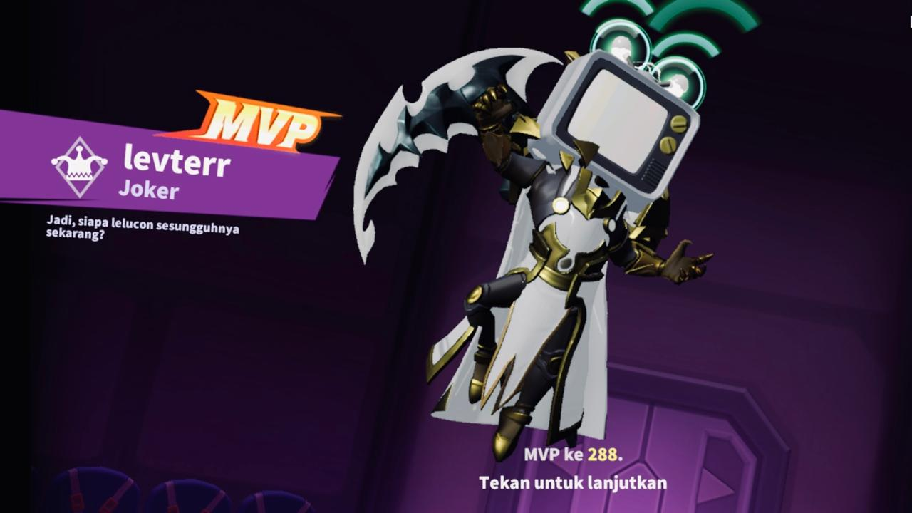
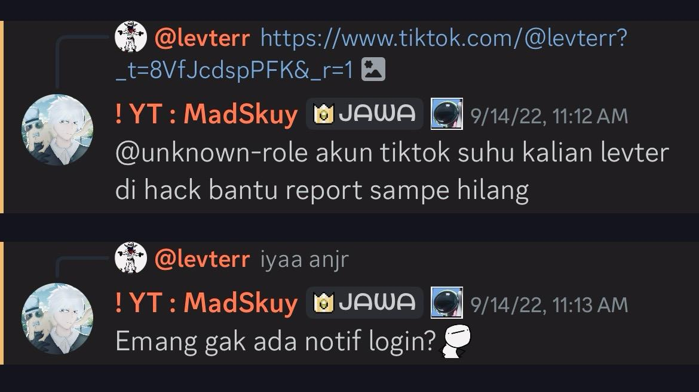
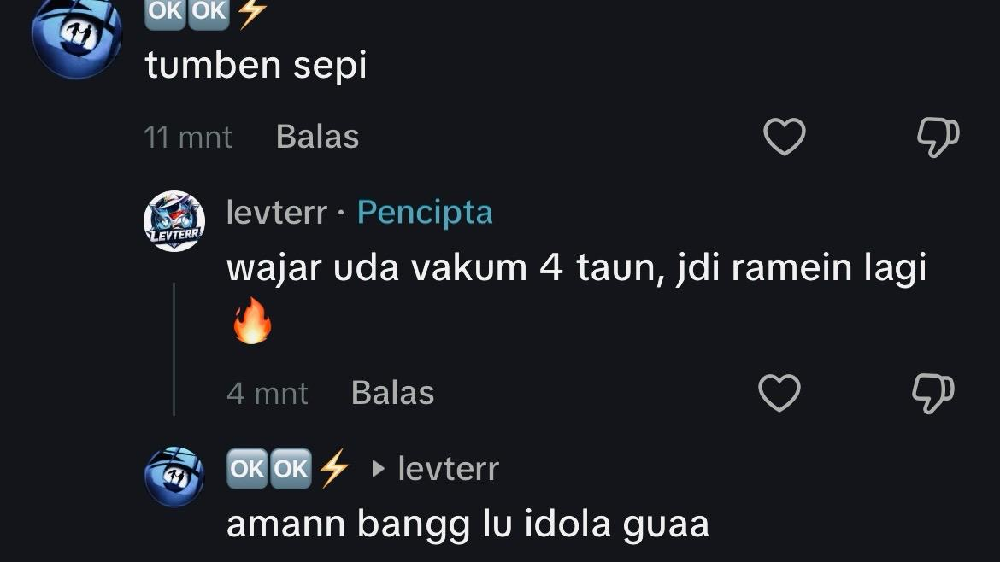
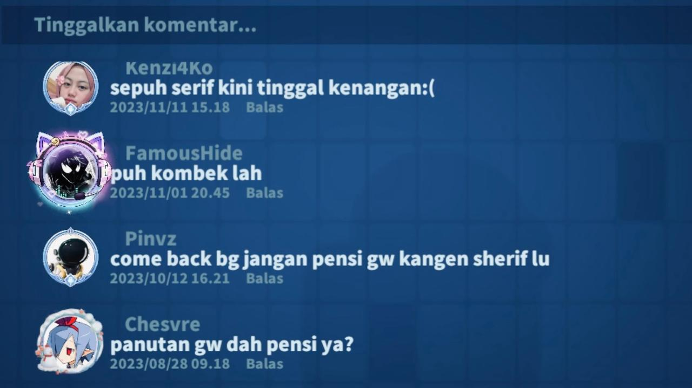
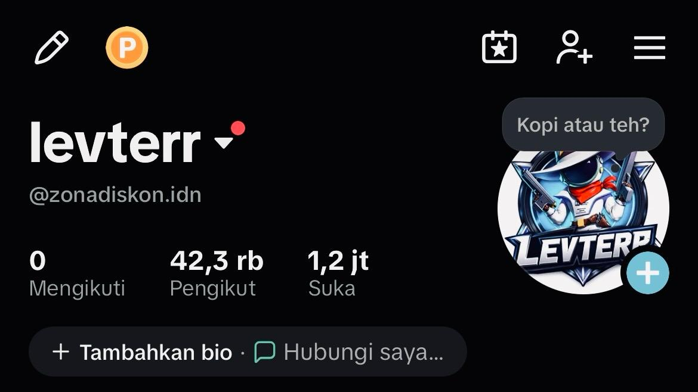
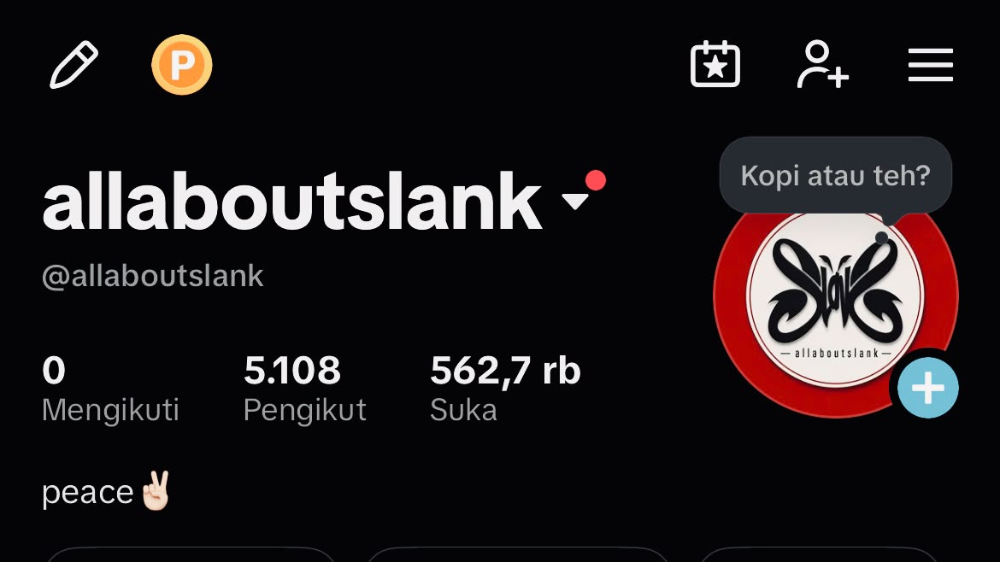
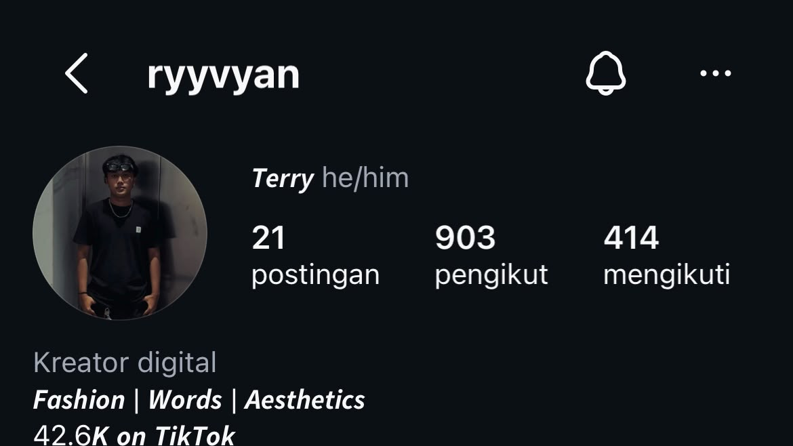
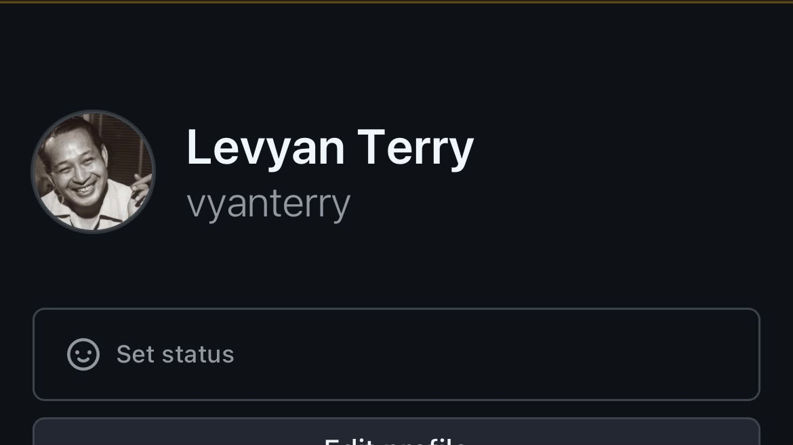

01 / AWAL PERJALANAN
Sebuah cerita dimulai
berawal dari akun levterr dan konten gaming yang di unggah dengan sepenuh hatii, dari sana, satu per satu cerita kecil mulai terkumpull
content creator yang berbagi cerita, lifestyle, dan berbagai momen menarik dengan cara yang autentik

sebuah perjalanan kecil yang penuh cerita—dari awal berkarya, melewati masa sulit, hingga menemukan semangat untuk kembali.

berawal dari akun levterr dan konten gaming yang di unggah dengan sepenuh hatii, dari sana, satu per satu cerita kecil mulai terkumpull

di antara banyak video, ada momen spesial seperti meraih MVP ke-288—kenangan sederhana yang membuat perjalanan ini terasa berartii

saat akun menghadapi masalah, dukungan teman-teman yang ikut membantu mengingatkanku bahwa selalu ada orang baik di sepanjang jalann

setelah cukup lama vakum, muncul lagi keinginan untuk meramaikan akun dan berbagi cerita baru dengan kaliann

komentar teman-teman yang bilang kangen dan menantikan konten baru menjadi alasan manis untuk terus berkarya. Perjalanan ini masih berlanjutt
tiga lagu yang sedang menemani cerita kecil kuu
temukan saya di berbagai platformm

✨ Just sharing my little world
📩 Business: DM
📸 Instagram: ryyvyan

All About Slank
Konten seputar Slank dan musik.

✨ Just sharing my little world
📩 Business: DM
📸 TikTok: @levterr

Tempat saya berbagi project, eksperimen, dan karya digital.
saya percaya bahwa karya yang baik bukan hanya tentang apa yang terlihat, tetapi juga tentang cerita dan nilai yang ada di baliknyaa
melalui konten, saya senang membagikan cerita, pengalaman, dan berbagai momen dengan cara yang sederhana, autentik, dan relevann
Punya ide atau ingin berkolaborasi? Hubungi saya melalui media sosial